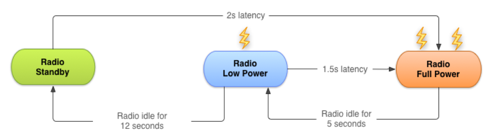
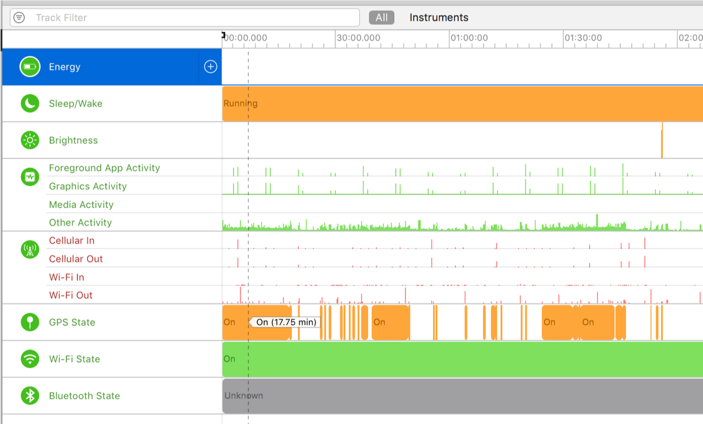
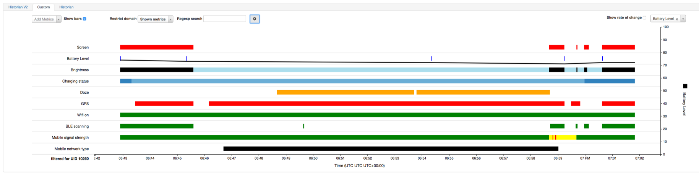

Strategies for building and testing battery-efficient mobile apps
Aaron Pulver
@apulverizer
## Your app is killing my battery!
## So many questions to ask...
## What do you mean by "poor battery life?"
## What baseline are you comparing it to?
## How is the device being used?
## What other apps are being used?
## How do you know that it's {app} that is causing poor battery life?
## How old is your device?
## What is the model and operating system of your device?
## What type of network and cellular coverage did you have?
## We can only change things we control * Network requests <!-- .element: class="fragment" --> * Location requests <!-- .element: class="fragment" --> * File I/O <!-- .element: class="fragment" --> * Device wakes <!-- .element: class="fragment" --> * UI refresh rates <!-- .element: class="fragment" --> * Reacting to "Low Power Mode" <!-- .element: class="fragment" -->
## Network Requests & Battery Life  * Data transmission takes energy <!-- .element: class="fragment" --> * Poor signal requires the radio to transmit at a higher power <!-- .element: class="fragment" --> * For a typical 3G device, every data transfer session will cause the radio to draw energy for almost 20 seconds. <!-- .element: class="fragment" -->
## So what can we do about it? * Group network requests together <!-- .element: class="fragment" --> * Radio is already powered up <!-- .element: class="fragment" --> * Leverage network monitoring <!-- .element: class="fragment" --> * Make requests only when server is reachable <!-- .element: class="fragment" -->
## Location & Battery Life * The on-device GPS receiver uses a significant amount of energy <!-- .element: class="fragment" --> * Location can be derived from a variety of sources <!-- .element: class="fragment" --> * GPS receiver <!-- .element: class="fragment" --> * Wi-Fi <!-- .element: class="fragment" --> * Cellular Tower Triangulation <!-- .element: class="fragment" --> * Other sensors <!-- .element: class="fragment" --> * Both Google and Apple provide "fused" location services <!-- .element: class="fragment" -->
## So what can we do about it? * Only request the accuracy you application needs <!-- .element: class="fragment" --> * Balanced, Best, Worst, Region Monitoring... <!-- .element: class="fragment" --> * Shutdown the GPS when it's not needed <!-- .element: class="fragment" --> * Do you need the users location when a map is not displayed? <!-- .element: class="fragment" --> * Do you need location in the background? <!-- .element: class="fragment" --> * Can you use proximity notifications or geofencing <!-- .element: class="fragment" -->
## What else can we do to optimize battery life? * Minimize data writes to files <!-- .element: class="fragment" --> * Use Core Data, Rooms, SQLite... <!-- .element: class="fragment" --> * Minimize device wakes <!-- .element: class="fragment" --> * High overhead to waking up a device <!-- .element: class="fragment" --> * Minimize timers and use tolerances for them <!-- .element: class="fragment" --> * Minimize screen refreshing <!-- .element: class="fragment" --> * Does the user always need to centered perfectly on the map? <!-- .element: class="fragment" --> * Change app behavior when app enters "Low Power Mode" <!-- .element: class="fragment" -->
## How do I test this stuff? * You could use multiple, identical devices with different branches <!-- .element: class="fragment" --> * Use monitoring tools to profile energy usage <!-- .element: class="fragment" --> * [Battery Historian/Android Studio](https://github.com/google/battery-historian) * [Instruments/Xcode](https://developer.apple.com/library/archive/documentation/Performance/Conceptual/EnergyGuide-iOS/MonitorEnergyWithInstruments.html#//apple_ref/doc/uid/TP40015243-CH33-SW1)
## Instruments 
## Battery Historian 